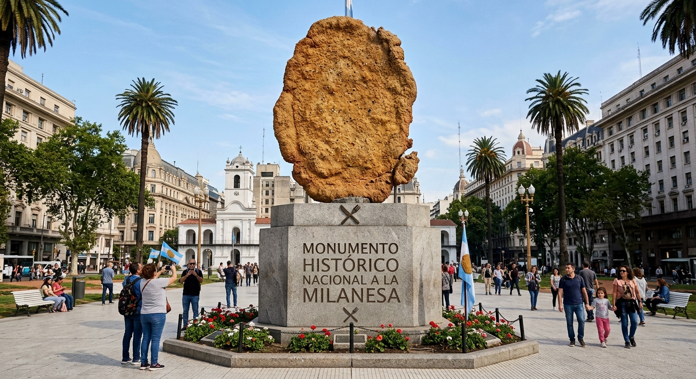

La Isla de Milan-ga
Milan-ga: El paraíso gastronómico del sur
El origen de la Isla de Milan-ga
La revolución e independencia de Milan-ga
Fundada en 1789 tras independizarse de Argentina, esta fría ciudad de 2000 habitantes es un polo turístico famoso por sus barrios con nombres temáticos como Villa la Milangostura, Larre-bozada y Polo Milanesero. Sus ciudadanos, los milanguesianos, consumen milanesas diariamente en exóticas variantes y combaten el clima con una infusión única en el mundo: café con sabor a milanesa.
Descubierta por Argentina en el sur y manteniendose como colonia, traería nuevos pobladores argentinos. la isla adoptó costumbres tipicas de argentina como el mate, el asado y el fútbol. Su profunda devoción por la milanesa transformaría su historia para siempre.
En 1789, un impuesto sobre la producción de milanesas desató la rebelión de los isleños bajo una bandera celeste, blanca y dorada. Esta revuelta, conocida como "La Guerra de la Milan-ga", culminó con el reconocimiento de su independencia como una nación soberana que mantiene orgullosamente sus raíces argentinas.
